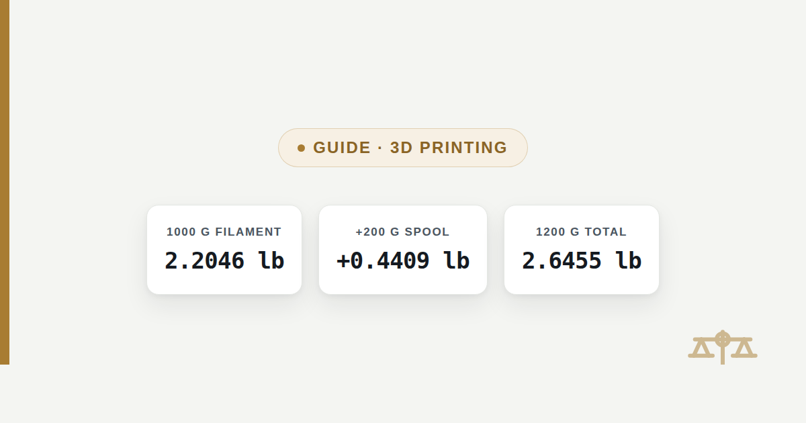

Filament Spool Weight: 1kg in Pounds (Net vs Gross)
The label says "1kg" but the scale says more. Here is the exact net weight in pounds, the typical gross weight with the spool included, and how to work out either one for any spool size.

A "1kg" filament spool contains 1,000 grams of printable material, which is 2.2046 pounds net. That figure never changes. What does change is the weight of the empty spool itself, which is typically 150 to 260 grams depending on the brand and whether it is plastic or cardboard — so a full spool weighed whole on a kitchen scale reads somewhere around 1,150 to 1,260 grams, or roughly 2.54 to 2.78 pounds.
The quick answer
1,000 grams of filament is 2.2046 pounds, and that is the number printed on almost every spool label. If you are estimating shipping weight or just want to know what the whole package weighs, add the empty spool: a typical mid-weight spool adds about 200 grams (0.4409 lb), putting a full 1kg spool at roughly 1,200 grams, or 2.6455 pounds, once the spool is included.
Net weight vs. gross weight, and why filament labels only show one
Net weight is the filament alone; gross weight is the filament plus the spool it is wound on, and every mainstream filament brand labels its packaging by net weight only. That convention exists because net weight is what a maker actually cares about — it is the figure that predicts how many meters of a print a spool can finish — while the spool itself is packaging, not product. The trouble is that "1kg" on the box gets read as the weight of the whole thing in hand, and it is not: it is the weight of just the plastic filament wound around the spool, not the spool underneath it.
This only becomes a problem in two situations: estimating the shipping weight of an order before it is boxed, and weighing a partly-used spool to work out how much filament is left. Both need the gross figure, and neither is printed on the label, so both require adding the spool's own weight back in by hand.
Filament weight chart, grams to pounds
These are the net weights — filament only — for every common spool size sold to consumer 3D printers. Use the grams to lbs converter for any value not listed here.
| Spool size | Net weight (g) | Net weight (lb) |
|---|---|---|
| 250 g mini spool | 250 g | 0.5512 lb |
| 500 g spool | 500 g | 1.1023 lb |
| 750 g spool | 750 g | 1.6535 lb |
| 1 kg spool (most common) | 1000 g | 2.2046 lb |
| 2 kg bulk spool | 2000 g | 4.4092 lb |
| 5 kg bulk spool | 5000 g | 11.0231 lb |
These are net figures only, because spool weight varies too much by brand and size to put a single gross number next to each row. The next section covers that variation and how to work out the gross weight for the size you actually have.
How much the empty spool adds
An empty filament spool typically weighs 150 to 260 grams, and which end of that range depends mainly on what the spool is made from. Injection-molded plastic spools, the kind most brands reuse across their whole product line, run heavier — commonly 180 to 260 grams. Cardboard and pressed-fiber spools, used by some brands specifically to cut shipping weight, run lighter — commonly 120 to 190 grams. A handful of premium plastic spools built for durability run past 260 grams, but that is the exception, not the norm.
In pounds, that range works out to about 0.3307 to 0.5732 lb for the spool alone. Add that to the 2.2046 lb of filament on a full 1kg spool and the gross weight lands between 2.5353 lb (light cardboard spool) and 2.7778 lb (heavy plastic spool), which matches the 1,150-to-1,260-gram range a full spool actually shows on a kitchen scale. If the exact spool weight matters — for precise shipping calculations, for example — the only reliable number is the one printed on that brand's own spec sheet or spool, since even spools from the same manufacturer change weight between product lines.
Weighing a spool to check how much filament is left
To find remaining filament weight, weigh the whole spool and subtract the empty spool's own weight; whatever is left over is the filament. This is the standard way makers track remaining material on printers that do not have a filament sensor, and it only takes a kitchen scale and the empty weight of that specific spool, which is often printed on the spool itself or listed on the manufacturer's site.
Full spool on the scale → 850 g
Empty spool weight (this brand) → 215 g
850 − 215 = 635 g of filament remaining
635 ÷ 453.59237 = 1.3999 lb remaining (1 lb 6.40 oz)
Empty spool weight (this brand) → 215 g
850 − 215 = 635 g of filament remaining
635 ÷ 453.59237 = 1.3999 lb remaining (1 lb 6.40 oz)
The same subtraction works at any point in the spool's life: a fresh 1kg spool with a 200-gram spool weighs 1,200 g gross; halfway through a print job that has used 300 g of filament, the same spool weighs 900 g gross, meaning 700 g (1.5432 lb) of filament remains.
Why this matters for shipping and postage
Shipping weight is always the gross weight, so a single 1kg spool almost never ships at exactly 2.2046 pounds. Add the spool (0.33 to 0.57 lb depending on brand) plus any box, padding, or vacuum bag, and one spool typically lands closer to 2.6 to 3 pounds once boxed. That gap matters most when ordering several spools at once: five spools at a nominal "2.2 lb each" is 11.02 lb of filament alone, but the actual box on a carrier's scale, with five spools and packaging included, commonly weighs 13 to 15 lb — enough to cross into a higher shipping-rate bracket than the filament weight alone would suggest. Checking a retailer's stated package weight before ordering, rather than multiplying the per-spool net figure, avoids being surprised by the actual carrier charge.
Frequently asked questions
How much does an empty 3D printer filament spool weigh?
An empty spool typically weighs 150 to 260 grams (0.33 to 0.57 lb), depending on the material. Cardboard and pressed-fiber spools run lighter, usually 120 to 190 grams, while injection-molded plastic spools run heavier, usually 180 to 260 grams. The exact figure varies by brand, so the manufacturer spec sheet or the weight printed on the spool itself is the most reliable source for any specific product.
How much does a full 1kg spool of filament weigh in pounds?
The filament itself is 2.2046 lb (1,000 g), which is what the label states. Including the empty spool, a full 1kg spool typically weighs 2.54 to 2.78 lb (1,150 to 1,260 g) total, depending on whether the spool is a light cardboard type or a heavier plastic type.
Why does the box only say 1kg instead of the total weight?
Filament is labeled by net weight, meaning the filament alone, because that figure is what determines how much material is actually available to print with. The spool is treated as packaging rather than product, the same way a bag of flour is labeled by the flour's weight and not the bag's. That convention is consistent across nearly every filament brand, so "1kg" on any spool means 1,000 g of filament plus an unlisted spool weight on top.
Does a 2kg filament spool come on one spool or two?
A 2kg spool is almost always a single, larger spool rather than two separate 1kg spools, wound wider or with a bigger diameter to hold the extra material. Its net weight is 4.4092 lb (2,000 g) of filament. Because the spool itself is also bigger, some printers and spool holders sized for standard 1kg spools cannot fit a 2kg spool without an adapter.
How do I figure out how much filament is left on a spool?
Weigh the whole spool on a kitchen scale, then subtract the empty spool's own weight; the remainder is the filament left. For example, a spool that weighs 850 g total, on a spool known to weigh 215 g empty, has 635 g (1.3999 lb) of filament remaining. This is the standard method for printers without a built-in filament sensor, and it works at any point in the spool's life, not just when it is nearly empty.
Is filament sold by weight or by length?
Filament is sold and labeled by weight in grams or kilograms, such as "1kg" or "500 g," not by length. Length varies with material density and filament diameter even at the same weight, so two 1kg spools of different materials (like PLA versus PETG) contain different total lengths despite having identical net weight.
Sources
- International Yard and Pound Agreement, 1959 — defines the international avoirdupois pound as exactly 453.59237 g
- 3D-Fuel, What are the sizes and weights of your spools? — manufacturer-published spool weights
- Bambu Lab community forum, spool weight threads — user-measured empty spool weights by brand and material